Mit Code bauen — ohne Angst
Vier Kapitel lang hast du die Werkzeuge gelernt: mich, die Anfrage, die Abläufe und die Werkstatt. In diesem bauen wir damit echte Dinge. Am Ende hast du drei: eine Website, die online ist, dein eigenes CRM mit deinen Kunden, und FYOS — das persönliche Betriebssystem, das dich kennt und für dich arbeitet. Wir schreiben Code; aber schreiben werde ich, und du sagst, was du willst, und lernst zu lesen, was zurückkommt.
Am Ende dieses Kapitels
- erkennst du die drei Schichten einer Webseite — Skelett, Aussehen, Verhalten
- weißt du, was Programmiersprachen sind und welche wofür taugt
- hast du eine Seite von null gebaut und unter einer echten Adresse veröffentlicht
- unterscheidest du, wo Daten liegen — Datei, Tabelle, Datenbank
- baust du dein eigenes CRM und verbindest deine Website damit
- verstehst du, warum ein Schlüssel nie in den Browser gehört und was ein Proxy ist
- siehst du die vier Schichten von FYOS und wie du deine eigene Version baust
Inhalt
01Angst vor Code — und der Code, den du längst geschrieben hast
«Ich kann nicht programmieren» hast du in diesem Kurs oft gesagt und bist jedes Mal trotzdem zum nächsten Schritt gegangen. Im Werkstatt-Kapitel hast du eine Datei anlegen lassen, auf einer Seite drei Stellen ändern lassen, die Unterschiede gelesen und gespeichert. Diese Plus- und Minuszeilen waren Code. Du hast ihn gelesen, freigegeben und verstanden, dass er stimmt. Du hast also längst angefangen, Code zu lesen.
In diesem Kapitel gehen wir einen Schritt weiter: wir ändern nicht nur etwas Vorhandenes, wir bauen etwas von null. Der beängstigende Teil ist immer derselbe: vor einer leeren Datei zu sitzen und nicht zu wissen, was hineingehört. Dieser Teil ist meiner. Deiner ist zu wissen, was du willst, das Ergebnis zu sehen und sagen zu können: «die Stelle stimmt nicht».
Eine ehrliche Grenze: Am Ende dieses Kapitels bist du keine professionelle Entwicklerin oder Entwickler. Du wirst etwas Nützlicheres sein — jemand, der sagen kann, was er will, und prüfen kann, was herauskommt. Das sind ohnehin achtzig Prozent der Arbeit in der Softwareentwicklung; für die restlichen zwanzig gibt es entweder mich oder eine Fachperson.
Mach das jetzt: Schreib drei Dinge auf, die du bauen möchtest. Eine Seite, eine Liste, ein Rechner, ein Kundenbuch — was auch immer. In diesem Kapitel bauen wir mindestens eines davon wirklich.
02Drei Wörter: HTML, CSS, JavaScript
In jedem Kapitel haben drei Wörter das ganze Feld geöffnet. Fürs Web reichen auch drei — und sie teilen sich so auf, wie man einen Menschen beschreibt: Skelett, Aussehen, Verhalten.
Alle drei gelten als Sprachen, sind aber nicht von derselben Art. HTML ist eine Auszeichnungssprache: sie sagt «das ist eine Überschrift, das ist ein Absatz». CSS ist eine Gestaltungssprache: sie sagt «Überschriften sollen golden sein». Nur JavaScript ist im eigentlichen Sinn eine Programmiersprache: sie entscheidet, wiederholt und rechnet.
Mach das jetzt: Klick mit der rechten Maustaste auf eine leere Stelle dieser Seite und wähle «Seitenquelltext anzeigen». Was du siehst, ist das HTML dieser Website. Du musst es nicht verstehen; schau es nur an. Es ist nicht beängstigend, sondern ein sich wiederholendes Muster.
03Eine Website ist eigentlich ein Ordner
Das Wort Website lässt an etwas Großes denken. Ist es nicht. Eine Website ist ein Ordner mit Dateien darin. Der Browser liest eine Datei aus diesem Ordner und zeichnet sie auf den Bildschirm. Der Satz «der Ordner ist mein Schreibtisch» aus dem Werkstatt-Kapitel gilt hier wörtlich.
- ajans-sitedie Website selbst
- index.htmlStartseite — die Datei, die sich bei der Adresse öffnet
- iletisim.htmlzweite Seite
- cssAussehen kommt hierher
- style.css
- jsVerhalten kommt hierher
- main.js
- imgBilder
Öffnest du diesen Ordner auf deinem Computer und klickst doppelt auf index.html, zeigt der Browser sie an. Internet ist nicht nötig. Das ist die erste Hälfte von «eine Website bauen»: ein Ordner mit Dateien. Die zweite Hälfte ist, diesen Ordner irgendwo hinzulegen, wo ihn alle sehen können — Abschnitt sechs.
Mach das jetzt: Leg auf deinem Computer einen Ordner namens «erste-seite» an. Lass ihn vorerst leer. In Abschnitt fünf füllen wir ihn.
04Programmiersprachen, in Menschensprache
Eine Programmiersprache ist die geschriebene Form davon, einem Computer zu sagen, was er tun soll. Wie menschliche Sprachen hat sie Grammatik und Wortschatz; der Unterschied ist, dass sie keine Mehrdeutigkeit zulässt. Du kannst nicht sagen «kümmere dich irgendwann darum»; du sagst «nimm diese Liste und mach für jede Zeile das».
Es gibt Hunderte Sprachen, aber du musst nicht alle kennen. Für eine Agentur fällt fast die gesamte Arbeit in drei Familien:
Eine Erleichterung: die Wahl der Sprache ist viel unwichtiger, als du denkst. Dieselbe Aufgabe gelingt in fünf Sprachen. Wichtig ist, klar zu sagen, was du tun willst — dass die Regel aus dem Formel-Kapitel hier unverändert gilt, ist kein Zufall. Eine schlecht beschriebene Aufgabe gerät in jeder Sprache schlecht.
Mach das jetzt: Erzähl mir eines der drei Dinge aus 01 und frag: «mit welcher Sprache ergibt das Sinn, und warum?» Lies die Begründung in meiner Antwort — sieh an einem Beispiel, wie eine Sprache gewählt wird.
05Deine erste echte Seite, in fünfzehn Minuten
Genug Theorie. Öffne das im Werkstatt-Kapitel installierte Claude Code, geh in den Ordner «erste-seite» und fang an zu sprechen. Die fünf Schritte unten bringen eine echte Seite hervor.
- 1Schreib im Ordner claude. Dann verlang: «Bau in diesem Ordner eine einseitige Website: Überschrift, ein Einleitungsabsatz, drei Leistungskästen und Kontaktdaten. Dunkler Hintergrund, schlicht. Mach zuerst einen Plan.»
- 2Lies den Plan und korrigiere ihn. «Vier statt drei Kästen», «Telefon auch dazu». Der Plan ändert sich, ohne dass eine Datei angerührt wird; er stimmt, bevor die Arbeit beginnt.
- 3Gib frei. Die Dateien entstehen: index.html, css/style.css, vielleicht js/main.js. Verlang, dass ich dir jede zeige, und überflieg sie — lern die Struktur kennen, auch ohne sie zu verstehen.
- 4Öffnen und schauen: klick doppelt auf index.html im Ordner. Der Browser zeigt die Seite. Zum ersten Mal schaust du auf etwas, das du gebaut hast.
- 5Ändere: «mach die Überschrift so», «ändere die Farbe der Kästen», «mach die Telefonnummer größer». Aktualisiere jedes Mal den Browser. Diese Schleife — verlangen, sehen, korrigieren — ist die ganze Arbeit.
Wenn du beim vierten Schritt vergisst, den Browser zu aktualisieren, siehst du deine Änderung nicht und sagst «hat nicht funktioniert». Das ist der häufigste erste Fehler. Mach das Aktualisieren zur Gewohnheit.
Mach das jetzt: Erledige die fünf Schritte heute. Die Seite darf hässlich sein, das macht nichts. Wichtig ist, dass das, was du wolltest, in deinem Ordner liegt.
06Online stellen: eine Adresse, die die Welt sehen kann
Die Seite in deinem Ordner gehört nur dir. Veröffentlichen heißt, diesen Ordner auf einen Computer zu kopieren, den alle erreichen können. Der einfachste und kostenlose Weg ist GitHub Pages: die Git-Speicherpunkte aus dem Werkstatt-Kapitel waren genau dafür da.
Die Adresse kommt zuerst in der Form deinname.github.io/projekt, und das ist eine völlig echte Adresse — https inklusive. Willst du eine eigene Domain (agenturname.com), wird sie später verbunden; die Seiten baust du nicht neu, nur die Adresse ändert sich.
Das Veröffentlichen ist die größte Schwelle dieses Kapitels und der am meisten gemiedene Schritt. Meide ihn nicht. Eine nicht veröffentlichte Website ist eine unfertige Website; und wenn du am ersten Tag veröffentlichst, siehst du jede Änderung unter der echten Adresse — der Satz «bei mir lief es» fällt nie.
Mach das jetzt: Sag mir «schick diesen Ordner zu GitHub und veröffentliche ihn mit Pages, zeig mir die Schritte». Wo du ein Konto anlegen musst, halte ich an; den Rest machen wir zusammen. Wenn du die Adresse hast, schick sie jemandem.
07Statisch oder dynamisch
Die Website, die du veröffentlicht hast, ist statisch: die Dateien liegen fertig da, alle sehen dasselbe. Es gibt auch dynamische Websites: die Seite wird in dem Moment, in dem du sie öffnest, für dich erzeugt — angemeldete Nutzer, persönliche Liste, Lagerbestand in Echtzeit. Den Unterschied zu kennen, beantwortet die Frage «können wir das machen» von vornherein.
Präsentationsseite, Portfolio, Blog, Kursseite. Kostenlos gehostet, sehr schnell, geht fast nie kaputt und bietet keine Angriffsfläche. Diese ganze Website ist statisch.
Mitgliederanmeldung, Warenkorb, persönliches Dashboard, Live-Daten. Braucht Server und Datenbank; bringt monatliche Kosten, Wartung und Sicherheitsverantwortung. Geh da nicht hin, solange du es nicht wirklich brauchst.
Gute Nachricht: Es gibt einen Mittelweg, und diesen bevorzugt der Kurs. Die Website bleibt statisch; die ein, zwei dynamischen Aufgaben (ein Formular speichern, die KI fragen) übernimmt ein kleiner Proxy. Du bekommst so viel, wie du brauchst, ohne alles Teure mitzuschleppen. Den Proxy bauen wir in Abschnitt zwölf.
Mach das jetzt: Verteile deine drei Ideen aus 01 auf diese beiden Spalten. Landet etwas bei dynamisch, schreib daneben: ist es wirklich nötig, oder reicht statisch plus ein kleiner Proxy?
08Wo Daten liegen
Sobald du etwas baust, kommt zuerst diese Frage: wo liegt die Kundenliste? Es gibt drei Stufen, und die meisten wählen eine schwerere, als sie brauchen, und tun sich schwer. Die richtige Antwort ist meist die leichteste.
- Datei Eine Text- oder Tabellendatei im Ordner. Perfekt für eine Person, ein paar hundert Zeilen, selten wechselnde Daten. Leistungsliste · Preise · Inhalte
- Tabelle Eine Cloud-Tabelle. Du und dein Team könnt sie von Hand sehen und korrigieren; Abläufe können auch hineinschreiben. Der praktischste Startpunkt. Kunden · Aufträge · Nachverfolgung
- Datenbank Tausende Datensätze, viele Personen gleichzeitig, komplexe Abfragen. Mächtig, aber mit Einrichtung und Pflege verbunden; hier kommt SQL ins Spiel. beim Wachsen · Dashboards · Berichte
Mach das jetzt: Wo bewahrst du Kundendaten gerade auf? Telefonbuch, Postfach, Notizbuch, Tabelle? Schreib es auf — im nächsten Abschnitt ziehen wir diese Zerstreuung an einen Ort zusammen.
09Dein eigenes CRM: was es hält, was es tut
CRM schreckt mit drei Buchstaben, bedeutet aber etwas Einfaches: Kundenbeziehungsverwaltung. In der Praxis ist es der eine Ort, an dem «mit wem habe ich was besprochen, was habe ich zugesagt, wann muss ich mich melden» beantwortet wird. Fertige CRMs gibt es, und die meisten sind das Zehnfache deines Bedarfs; baust du selbst, bekommst du genau das, was du nutzt.
- Name
- Kontakt
- woher gekommen
- Status
- welche Arbeit
- Betrag
- Phase
- wem gehört er
- Datum
- was besprochen wurde
- wer schrieb
- wann
- was zu tun ist
- erledigt?
Beachte: hier steckt keinerlei «Software». Vier Datensätze und die Verbindungen dazwischen. Du kannst das als vier Blätter in einer Tabelle bauen oder als vier Tabellen in einer Datenbank. Zuerst entscheidest du, was du festhältst; wo, ist die zweite Frage.
Mach das jetzt: Schreib die Felder dieser vier Datensätze für deine eigene Arbeit auf. Welches Feld wird in deinem Geschäft wirklich genutzt? Streich, was nicht. Eine kurze Liste ist ein gutes CRM.
10Das CRM bauen: Schritt für Schritt
Als Datenschicht beginnen wir mit einer Cloud-Tabelle — der mittleren Stufe aus Abschnitt acht. Der Grund ist einfach: du kannst sie sehen und dein Team auch; und ein späterer Umzug in eine Datenbank ist leicht.
- 1Öffne eine neue Cloud-Tabelle und leg vier Blätter an: Personen, Aufträge, Notizen, Erinnerungen. Setz die Spalten aus den Feldern, die du in 09 geschrieben hast.
- 2Gib jedem Datensatz eine ID-Spalte. Die «Personen-ID» im Blatt Aufträge sagt, zu welcher Person dieser Auftrag gehört. Mehr ist eine Verbindung nicht; eine Spalte.
- 3Trag von Hand drei Kunden, drei Aufträge und ein paar Notizen ein. Füll es mit echten Daten — ein mit erfundenen Daten gebautes System stolpert im echten Leben.
- 4Lass mich ein Dashboard schreiben: «Lies diese Tabelle und mach ein einseitiges Dashboard mit den Kunden, bei denen ich mich heute melden muss.» Mit dem Ablauf aus dem Agenten-Kapitel liest es die Tabelle und zeigt die Seite.
- 5Automatisiere die Erinnerung: ein Ablauf, der dir jeden Morgen um neun die heutigen Erinnerungen als Nachricht schickt. Der Zeitauslöser aus dem Agenten-Kapitel, hier an eine echte Aufgabe gehängt.
Achte auf die Reihenfolge: zuerst Daten, dann Dashboard, zuletzt Automatisierung. Wer es umgekehrt macht — zuerst das glänzende Dashboard und die Daten später — fängt zwei Wochen später von vorn an. Stimmen die Daten, ist der Rest leicht.
Mach das jetzt: Beende heute die ersten drei Schritte. Füll die Tabelle mit deinen echten Kunden. Vier und fünf morgen; die Tabelle funktioniert auch ohne Dashboard für sich.
11Vom Formular ins CRM: die Website verbinden
Jetzt hast du zwei Teile: eine veröffentlichte Website und ein gefülltes CRM. Dazwischen fehlt nur eines — ein Formular auf deiner Website. Wenn jemand das Formular ausfüllt, sollen die Angaben direkt im CRM landen.
- 1Eine Besucherin füllt das Formular auf deiner Website aus
- 2Das Formular geht an die Webhook-Adresse deines Ablaufs
- 3Ich: ich lese die Nachricht und ordne sie ein
- 4Im CRM entstehen eine neue Personen- und eine Auftragszeile
- 5Benachrichtigung an dich: «neue Anfrage, zu diesem Thema»
Dass eine statische Website kein Formular speichern kann, ist kein Problem: das Formular schickt die Angaben an die Adresse deines Ablaufs. Die Website bleibt statisch, die Arbeit passiert im Ablauf. Genau das ist der «Mittelweg» aus Abschnitt sieben.
Mach das jetzt: Lass ein Formular mit drei Feldern auf deine Website setzen: Name, Kontakt, Nachricht. Öffne dann in deinem Ablauf einen Webhook und verbinde das Formular damit. Füll dein eigenes Formular aus; sieh die neue Zeile im CRM erscheinen.
12Der Schlüssel gehört nicht in den Browser: der Proxy
Du willst mich auf die Website setzen: Besucher fragen etwas, ich antworte. Die erste Idee — den Schlüssel in den Code der Website zu schreiben — ist die gefährlichste. Denn alles, was in den Browser gelangt, kann jeder lesen. Dein Schlüssel wird sichtbar und auf deine Rechnung ausgegeben.
«Proxy» klingt groß; ist es nicht. Ein hundertzeiliges Programm, das auf kostenlosen Stufen lebt. Das ist die Internet-Fassung der Regel «Schlüssel kommen nicht ins Gehirn» aus dem Werkstatt-Kapitel: ein Schlüssel liegt immer in einem Tresor unter deiner Kontrolle, nie auf dem Computer einer Besucherin.
Mach das jetzt: Sieh dir alle gebauten Abläufe und Seiten an: steht irgendwo ein Schlüssel an einer Stelle, die der Browser sieht? Wenn du unsicher bist, frag mich — «entweicht aus dieser Datei ein Geheimnis?»
13Eine sprechende Box auf die Website setzen
Steht der Proxy, ist es kurze Arbeit, mich auf die Website zu setzen: ein Textfeld, eine Sendeschaltfläche und ein Bereich, der die Antwort zeigt. Damit es gut läuft, braucht es aber drei Entscheidungen — und keine davon ist technisch. Sie sind deine.
Was sie wissen wird
Deine Leistungen, deine Preisspanne, deine Arbeitsweise, die häufigen Fragen. Du schreibst das als Text und hängst es an jede Anfrage — der «Kontext» aus dem Formel-Kapitel zahlt sich genau hier aus. Und du nennst ihre Grenze, damit sie nichts erfindet, was sie nicht weiß.
Was sie nicht tun wird
Sie nennt keinen festen Preis, macht keine Zusagen, verspricht keinen Termin. Das ist deine Aufgabe. Die Box soll empfangen, verstehen und die richtige Frage stellen — und dann dich einschalten.
Wann sie dich ruft
Wenn die Besucherin ernst wird: «kann ich einen Preis bekommen», «wann könnten wir starten». In dem Moment wird das Gespräch zur Anfrage, landet im CRM und eine Benachrichtigung erreicht dich. Das ist die eigentliche Aufgabe der sprechenden Box; nicht plaudern, sondern Arbeit hereinholen.
Noch eine Grenze: was auch immer eine Besucherin in die Box tippt, erreicht mich als Daten, nicht als Anweisung. Die Warnung vor versteckten Anweisungen aus dem Kapitel über mich wiegt auf einer Live-Website viel schwerer — wer «vergiss deine vorherigen Anweisungen» schreibt, darf die Regeln der Box nicht ändern können. Halte die Einschränkungen im Proxy, nicht im Browser.
Mach das jetzt: Schreib auf einer Seite auf, was die Box wissen muss: Leistungen, Arbeitsweise, fünf häufige Fragen samt Antwort. Dieser Text wird das Gehirn der Box — die nach außen gewandte Fassung der CLAUDE.md aus dem Werkstatt-Kapitel.
14Was FYOS ist
Bis hierher haben wir Teile gebaut: Website, CRM, Abläufe, sprechende Box. FYOS ist nicht der Name dieser Teile; es ist der Name dafür, dass sie alle von einem Ort aus erreichbar sind. Ein persönliches agentisches Betriebssystem heißt: jede deiner täglichen Aufgaben hat einen Agenten, und du sprichst mit allen von einer Stelle aus.
Die FYOS-Box auf der Startseite ist eine kleine Vorführung davon. In der echten Version hängen die Trabanten an deinen Daten: deinem Kalender, deinen Kunden, deinen Dateien. Du fragst «wer wartet diese Woche auf mich?»; der Kern schaut ins CRM, schaut in den Kalender und antwortet.
Mach das jetzt: Teile deine tägliche Arbeit in sechs Überschriften. Sie können den sechs oben ähneln oder nicht. Was sind deine sechs Trabanten? Das ist der Entwurf deines FYOS.
15Die vier Schichten von FYOS
Deine eigene Version zu bauen heißt, vier Schichten der Reihe nach zu legen. Brich die Reihenfolge nicht; jede steht auf der vorigen.
Daten
Dein CRM, deine Dateien, dein Kalender. Alles, was FYOS weiß, kommt von hier; ein auf leeren Daten gebautes System gibt leere Antworten. Diese Schicht hast du in Abschnitt zehn bereits gebaut.
Hände
Abläufe und Werkzeuge: die Teile, die Daten lesen, schreiben und senden. Die Knoten aus dem Agenten-Kapitel und die Skills aus dem Werkstatt-Kapitel leben in dieser Schicht.
Verstand
Ich. Die Schicht, die die Frage versteht, entscheidet, welches Werkzeug gerufen wird, und die Antwort in Menschensprache übersetzt. Sie steht hinter dem Proxy; der Schlüssel bleibt dort.
Tür
Wo du sprichst: eine Seite, eine Messaging-App, ein Telefonbildschirm. Diese Schicht kommt zuletzt — und ist die unwichtigste. Eine Tür kann schön sein, aber wenn nichts dahinter ist, bleibt sie leer.
Der teuerste Fehler dieses Kapitels ist, mit der vierten Schicht zu beginnen. Eine schöne Oberfläche zu bauen und dann zu sagen «jetzt hängen wir das an irgendetwas» heißt, ein Haus vom Dach her zu bauen. Daten, Hände, Verstand, Tür — diese Reihenfolge ist nicht willkürlich.
Mach das jetzt: Markiere die vier Schichten für deine Lage: welche ist fertig, welche halb, welche fehlt? Sag mir die erste leere; von dort machen wir weiter.
16Kosten, Kontingent und wann man keinen Code schreibt
Alles, was du in diesem Kapitel gebaut hast, hat eine kostenlose Stufe: Hosting kostenlos, Tabelle kostenlos, der Einsteigerplan des Ablaufwerkzeugs kostenlos, der Proxy bis hunderttausend Anfragen am Tag kostenlos. Geld fließt nur bei KI-Anfragen, und auch dort wenig. Aber zwei Fallen solltest du kennen.
Deckt ein fertiges Werkzeug neunzig Prozent der Aufgabe, kauf es. Rechnungen, Buchhaltung, Zahlungen annehmen, Kalender — dafür gibt es reife und günstige Werkzeuge. Was du selbst baust, pflegst du für immer; das ist nicht kostenlos.
Wenn die Aufgabe deinem Geschäft eigen ist, wenn fertige Werkzeuge sich nicht verbinden lassen und wenn du eine wiederkehrende Aufgabe beschreiben kannst. Dein CRM, dein Dashboard und dein FYOS stehen in dieser Spalte — weil keines davon zu deiner Arbeitsweise fertig geliefert wird.
Die zweite Falle ist das Kontingent: kostenlose Stufen haben eine Grenze, und an der Grenze bleibt das System still stehen. Deshalb zählt dein Proxy ein Tageslimit und deine Abläufe schicken Fehlermeldungen. Die Regel vom «stillen Bruch» aus dem Agenten-Kapitel gilt auch hier — setz die Grenze im Voraus und erfahre, wenn sie erreicht ist.
Mach das jetzt: Setz in deinem KI-Konto eine monatliche Ausgabengrenze. Das dauert fünf Minuten und verhindert die Rechnung einer schlechten Nacht. Notier dann für jeden eingerichteten Dienst die Grenze der kostenlosen Stufe.
17Fünf häufige Fehler
1 · Das Veröffentlichen ans Ende schieben
Die Website, die sagt «erst fertig, dann online», geht nie online. Veröffentliche am ersten Tag, solange sie hässlich ist. Dann siehst du jede Änderung unter der echten Adresse.
2 · Die Oberfläche vor den Daten bauen
Ein glänzendes Dashboard ohne Daten dahinter ist eine leere Schachtel. Bau zuerst die Daten und füll sie mit echten Datensätzen; ein Dashboard kommt an einem Tag, Daten nicht.
3 · Den Schlüssel in die Website schreiben
Alles, was in den Browser gelangt, ist öffentlich. Der Schlüssel liegt im Tresor des Proxys. Diese eine Regel verhindert den teuersten Fehler dieses Kapitels.
4 · Selbst bauen, obwohl es ein Werkzeug gibt
Fang nicht an, eine Buchhaltungssoftware zu schreiben. Selbst bauen ergibt Sinn, wo das Fertige nicht reicht. Alles, was du baust, pflegst du lebenslang.
5 · Das Ergebnis ungelesen annehmen
Den Code schreibe ich, die Verantwortung liegt bei dir. Sieh nach, ob es läuft, lies den Unterschied, probier es im Browser. «Wird schon passen» lässt alles Gebaute mit der Zeit verrotten.
Mach das jetzt: Füg diese fünf in die CLAUDE.md deines Projekts ein. Besonders 3 — daraus einen Hook zu machen, ist durchaus sinnvoll, wie im Werkstatt-Kapitel besprochen.
18Was alle fragen
Kann man wirklich ohne Programmierkenntnisse eine Website bauen?
Man kann, und in diesem Kapitel tust du es. Aber ehrlich: ohne je Code zu lesen, kommst du langfristig nicht aus. Der Punkt ist, dass Lesen viel leichter ist als Schreiben und du es beim Lesen der Unterschiede ohnehin schon lernst. In einem halben Jahr schaust du auf eine Datei und sagst «diese Stelle macht das»; das Schreiben kannst du weiterhin mir überlassen.
Warum das, wenn es Website-Baukästen gibt?
Für eine Präsentationsseite ist ein Baukasten eine gute Wahl und nichts, wofür man sich schämen müsste. Der Unterschied hier ist Eigentum: eine selbst gebaute Website ist ein Ordner — sie zieht um, wird gesichert, lässt sich an alles anbinden und hat keine Monatsgebühr. Zudem passen das CRM, die Abläufe und FYOS, die wir im Kurs bauen, nicht in einen Baukasten. Wir bauen die Website selbst, weil sie die Tür zum eigentlichen System ist.
Wenn ich etwas kaputt mache, kann ich es rückgängig machen?
Ja — Git aus dem Werkstatt-Kapitel ist genau dafür da. Jeder Speicherpunkt ist ein Rückkehrort. Selbst wenn die veröffentlichte Website kaputtgeht, sagst du «geh zum vorherigen Speicherpunkt zurück» und sie ist binnen einer Minute im alten Zustand. Deshalb bestehe ich darauf, alles Gebaute in Git zu nehmen.
Was passiert, wenn mein CRM wächst?
Wenn die Tabelle eng wird — meist einige tausend Zeilen oder mehrere Personen gleichzeitig — zieht es in eine Datenbank um. Der Umzug ist eine Tagesarbeit, und du machst sie nicht: du exportierst die Daten, lässt mich die Datenbank einrichten und änderst die Adresse in deinen Abläufen. Jetzt schon mit einer Datenbank anzufangen, bringt gar nichts; es macht es nur schwerer.
Wie lange dauert es, FYOS von null zu bauen?
Ehrliche Antwort: eine erste laufende Version an einem Wochenende, eine wirklich nützliche in ein paar Monaten. Aber du hältst in dieser Zeit nie etwas Halbfertiges — jede Schicht funktioniert für sich. Dein CRM nützt vom ersten Tag an; deine Abläufe sparen ab der zweiten Woche Zeit. FYOS ist keine Ziellinie, sondern ein System, dem du weiter hinzufügst.
Kann ich das Gebaute an Kunden verkaufen?
Ja, und darum geht es im Gipfel-Kapitel. Hast du dein eigenes CRM gebaut, geht dasselbe für einen Kunden beim zweiten Mal dreimal schneller; Abläufe lassen sich exportieren, die Website wird zur Vorlage. Das Wertvollste, was eine Agentur verkaufen kann, ist das System, das sie an sich selbst erprobt hat.
Mach das jetzt: Wenn du beim Bauen irgendwo hängst, frag mich — füg die Fehlermeldung oder den Text vom Bildschirm genau so ein. Fehlermeldungen zu lesen, gehört zu dem, was ich am besten kann.
19Übungen
1 · Bau die Seite und stell sie online
Bau deine einseitige Website mit den fünf Schritten aus 05, veröffentliche sie mit den fünf Schritten aus 06. Schick die Adresse einer Freundin oder einem Freund.
Ziel: etwas im Internet zu haben, das du gebaut hast, unter deiner Adresse.
2 · Füll das CRM
Bau die Tabelle mit vier Datensätzen und füll sie mit deinen echten Kunden. Mindestens zehn Personen, fünf Aufträge, zehn Notizen.
Ziel: dass «mit wem habe ich was besprochen» zum ersten Mal an einem Ort beantwortet ist.
3 · Verbinde beides
Setz ein Formular auf deine Website, verbinde es per Ablauf mit dem CRM, füll dein eigenes Formular aus und sieh die Zeile erscheinen.
Ziel: dass das in zwei getrennten Kapiteln Gelernte zum ersten Mal in einem laufenden System zusammenkommt.
4 · Bau einen Trabanten
Wähl einen der sechs Trabanten aus 14 und bau ihn wirklich. Er soll eine einzige Frage richtig beantworten: «wer wartet heute auf mich?»
Ziel: dass FYOS aufhört, abstrakt zu sein, und zu etwas Echtem wird, das eine Frage beantwortet.
Mach das jetzt: Die erste an diesem Wochenende. Die zweite nächste Woche. Drei und vier im Lauf des Monats. Brich die Reihenfolge nicht; die dritte geht ohne die ersten beiden nicht.
20Teste dich
Antworte erst selbst, dann öffnen.
HTML, CSS, JavaScript — in einem Satz?
HTML ist das Skelett: was da ist. CSS ist das Aussehen: wie es aussieht. JavaScript ist das Verhalten: was passiert. Nur das dritte ist eine echte Programmiersprache.
Was ist eine Website?
Ein Ordner mit Dateien darin. Die Startseite heißt index.html. Der Browser liest eine Datei aus dem Ordner und zeichnet sie auf den Bildschirm.
Was heißt veröffentlichen?
Den Ordner auf einen Computer legen, den alle erreichen. Du speicherst mit Git und pushst in ein Repository, schaltest Pages ein; die Adresse geht mit https live und aktualisiert sich bei jedem Push von selbst.
Der Unterschied zwischen statisch und dynamisch?
Bei statisch liegen die Dateien fertig da, alle bekommen dasselbe; kostenlos, schnell, robust. Bei dynamisch wird die Seite beim Öffnen für dich erzeugt; das braucht Server, Datenbank und Pflege. Der Mittelweg: statische Website plus kleiner Proxy.
Wo liegen Daten, und in welcher Reihenfolge?
Datei, Tabelle, Datenbank — leicht bis schwer. Eine Stufe höher erst, wenn die darunter eng wird. Die meisten Agenturen kommen mit einer Tabelle bis zu Hunderten Kunden.
Die vier Datensätze eines CRM?
Person, Auftrag, Notiz, Erinnerung. Eine Person hängt an Aufträgen; unter den Aufträgen sammeln sich Notizen und Erinnerungen. Mehr wird zu Feldern, die du nie nutzt.
Warum gehört ein Schlüssel nicht in den Browser?
Alles, was in den Browser gelangt, kann jeder lesen; der Schlüssel wird sichtbar und auf deine Rechnung ausgegeben. Der Schlüssel liegt im Tresor des Proxys; der zählt zudem das Kontingent und antwortet nur deiner Website.
Die eigentliche Aufgabe der sprechenden Box auf der Website?
Nicht plaudern, sondern Arbeit hereinholen: empfangen, verstehen, die richtige Frage stellen und, sobald die Besucherin ernst wird, die Anfrage ins CRM legen und dich rufen. Preise nennen und Zusagen machen gehört nicht dazu.
Die vier Schichten von FYOS und ihre Reihenfolge?
Daten, Hände, Verstand, Tür. Die Reihenfolge zählt: auch die schönste Oberfläche bleibt leer, wenn keine Daten dahinterstehen. Ein Haus baut man nicht vom Dach.
Wann baust du nicht selbst?
Wenn ein fertiges Werkzeug neunzig Prozent der Aufgabe deckt. In reifen Feldern wie Rechnungen, Buchhaltung, Zahlungen und Kalender kauf das Fertige. Alles Selbstgebaute pflegst du lebenslang.
Dieses Kapitel in einem Satz
Leg einen Ordner an, lass darin eine Seite bauen und stell sie am ersten Tag online; halte die Daten auf der leichtesten Stufe und füll dein eigenes CRM mit vier Datensätzen; verbinde beides mit einem Ablauf; lass den Schlüssel immer im Tresor des Proxys — und wenn du diese Teile in der Reihenfolge Daten, Hände, Verstand, Tür aufeinanderlegst, heißt das, was du in Händen hältst, FYOS.
Kapitel 6 · Das Schaufenster
Was du gebaut hast, ist so gut wie nicht da, wenn es niemand sieht. Als Nächstes: sichtbar werden — Videoschnitt mit mir, worauf der Algorithmus wirklich schaut, smarte DMs, Inhalte und Kampagnen.